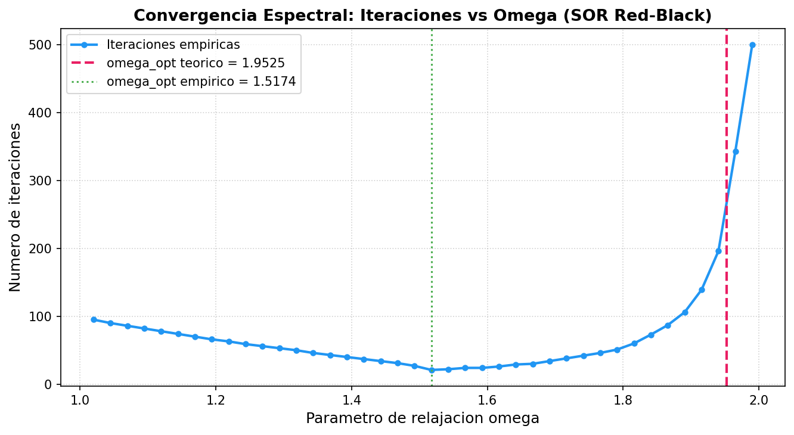
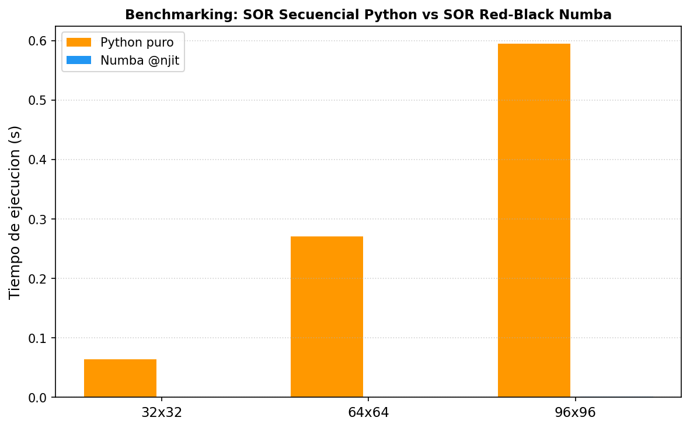
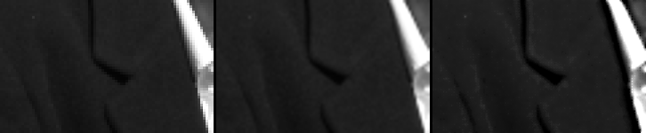

Super-resolucion con SOR Red-Black, Numba y la ecuacion de Poisson screened
Fabian · Algoritmos · 2026
Parte 01
Que resuelve este proyecto
01
01 · El problema
La bicubica interpola; RZI resuelve una ecuacion diferencial
Interpolacion clasica (bicubica)
Calcula cada pixel nuevo como una combinacion ponderada de los vecinos. No tiene informacion sobre la estructura: el resultado queda borroso.
Enfoque PDE (RZI)
Formula una ecuacion de Poisson cuya solucion produce la imagen mas nitida posible consistente con los pixeles originales y con los bordes de la guia.
Clave: la EDP actua como regularizador que selecciona la imagen suave entre todas las soluciones posibles.
02
01 · Objetivo academico
El proyecto implementa SOR Red-Black con Numba sobre mallas de hasta 1.2 millones de pixeles
Resolver numericamente la ecuacion de Poisson screened usando diferencias finitas (stencil de 5 puntos).
Acelerar el solver con Numba @njit(parallel=True) y el ordenamiento Red-Black para paralelizar cada barrido.
Construir un pipeline completo: cascada multiescala, back-projection, difusion Perona-Malik, shock filter y soporte de color YCbCr.
La EDP convierte el problema de super-resolucion en un sistema lineal disperso y diagonalmente dominante que SOR resuelve en pocas centenas de iteraciones.
03
Parte 02
Arquitectura y uso
04
02 · Arquitectura
Tres capas con dependencias unidireccionales separan la GUI de la matematica
05
02 · Flujo de uso
El usuario selecciona una region, configura el factor y obtiene el compuesto ampliado en segundos
#
Paso
Accion del usuario
Resultado
1
Abrir
Boton "Abrir imagen"
Imagen cargada en visor izquierdo
2
Seleccionar
Dibujar rectangulo sobre la region
Tile definido en coordenadas de imagen
3
Configurar
Ajustar factor, lambda, beta, tau
Parametros listos
4
Reconstruir
Pulsar "Reconstruir (Poisson SOR)"
Pipeline ejecuta en hilo separado
5
Ver
Visor derecho muestra compuesto
Region reconstruida en imagen ampliada
6
Guardar
Boton "Guardar imagen"
PNG o JPEG exportado
06
Parte 03
Teoria matematica: EDP y Poisson
07
03 · Laplaciano discreto
El stencil de 5 puntos aproxima el Laplaciano con diferencias finitas de segundo orden
Con restricciones interiores, el omega optimo empirico (1.52) difiere mucho del teorico (1.95)

Barrido empirico. El minimo (linea verde punteada) esta en 1.52, no en 1.95. Las restricciones interiores (pixeles conocidos cada "factor" posiciones en la malla) modifican el radio espectral efectivo. Usar 1.95 aumenta las iteraciones y acerca el solver a la divergencia.
14
04 · Convergencia
El residuo L2 cae cuatro ordenes de magnitud en 325 iteraciones con decaimiento lineal en escala log
Curva de convergencia del solver SOR Red-Black (omega = 1.95, modelo armonico). El patron oscilante de alta frecuencia es tipico del barrido Red-Black: los rojos y negros se alternan. La trayectoria general es estrictamente decreciente.
15
04 · Ordenamiento Red-Black
El patron de tablero rompe dependencias de Gauss-Seidel y habilita paralelismo con prange
Un pixel rojo (i+j) par tiene solo vecinos negros. Entonces se pueden actualizar todos los rojos a la vez sin condicion de carrera.
@njit(cache=True, parallel=True)
def kernel_sor_rb(u, b, lam_map, omega, red):
h, w = u.shape
for i in prange(1, h-1): # paralelo
for j in range(1, w-1):
if (i+j) % 2 != red:
continue
diag = 4.0 + lam_map[i,j]
u_gs = (u[i-1,j]+u[i+1,j]+
u[i,j-1]+u[i,j+1]+
b[i,j]) / diag
u[i,j] += omega*(u_gs-u[i,j])
16
04 · Rendimiento
Numba @njit acelera el solver 380 a 444 veces respecto a Python puro

Python puro (naranja) vs Numba @njit (azul, casi invisible). 100 iteraciones. La barra azul existe pero es imperceptible a esta escala.
Por que es tan rapido
Compilacion a codigo de maquina nativo (LLVM) en el primer llamado.
Sin overhead del interprete Python en el bucle interno.
prange distribuye el bucle externo en multiples nucleos del CPU.
fastmath=True habilita reordenamientos de punto flotante para mayor velocidad.
380x32x32
444x64x64
435x96x96
17
Parte 05
Pipeline completo de reconstruccion
18
05 · Cascada multiescala
Dividir el factor en etapas pequenas reduce las iteraciones y mejora la calidad
Un salto directo de factor 12 parte de una solucion inicial muy lejana a la respuesta. La cascada descompone el factor en etapas:
Cada etapa recibe como solucion inicial la salida de la etapa anterior (warm start). El solver necesita muchas menos iteraciones porque parte cerca de la solucion.
19
05 · Post-procesamiento
Back-projection corrige la consistencia con el original; el stack de acabado mejora la apariencia visual
Back-projection
for _ in range(n_pass=2):
err = f_lr - Down(u) # error LR
u = u + gain * Up(err) # corregir HR
# gain default: 0.6
Anti-ringing
u[i,j] = clip(u[i,j],
local_min_3x3(G),
local_max_3x3(G)) # G = guia bicubica
Stack finalizar_display
Resize LANCZOS al tamano exacto (tw*factor, th*factor)
Difusion Perona-Malik (5 iters, kappa=0.03) -- suaviza ruido en zonas planas
El ojo humano percibe el 85% del detalle a traves de Y. Resolver la EDP solo sobre Y reduce el tiempo de calculo a una tercera parte.
Pipeline de color
Convertir RGB -> YCbCr
Resolver EDP sobre Y_lr -> Y_hr (pipeline completo)
Escalar Cb_lr, Cr_lr a alta resolucion con bicubica
Recombinar Y_hr + Cb_hr + Cr_hr -> RGB
El resultado conserva colores correctos y tiene la nitidez del solver en los bordes.
21
05 · Resultado visual
Los bordes del solver son notablemente mas nitidos que la bicubica en zonas con textura

Izquierda: bicubica. Centro: Poisson screened sin amplificacion de gradientes (beta=1). Derecha: con beta=1.7 y shock filter. Los bordes en la version derecha son mas escarpados; el detalle de textura es mas pronunciado. Las tres imagenes tienen el mismo factor de upscaling.
22
Parte 06
Metricas y resultados
23
06 · Metricas de calidad
PSNR, SSIM y GMSD miden dimensiones distintas de calidad; ninguna es suficiente sola
Metrica
Formula
Mejor valor
Que mide
PSNR
10*log10(1/MSE)
Mayor (dB)
Error cuadratico total en escala log. Sensible a ruido uniforme.
Variabilidad de la similitud de gradientes. Detecta ringing y artefactos locales.
Interpretacion practica: PSNR alto + SSIM alto + GMSD bajo = imagen fiel, nitida y sin artefactos. Una reconstruccion puede tener PSNR aceptable pero GMSD alto si introduce halos cerca de bordes.
24
06 · Hallazgos experimentales
Laplace supera a Poisson screened con submuestreo fuerte; el omega teorico no aplica con restricciones interiores
Hallazgo 1: Laplace gana con factor 4
Metodo
PSNR
SSIM
Bicubica
23.12 dB
0.81
Laplace puro
24.50 dB
0.84
Screened Poisson
21.70 dB
0.79
Con solo el 6.25% de pixeles conocidos, los gradientes de la guia bicubica son ruidosos. El error en b degrada la solucion screened.
Hallazgo 2: omega empirico = 1.52
La formula teorica 2/(1+sin(pi/(N+1))) asume borde Dirichlet puro. Los pixeles conocidos en el interior modifican el radio espectral.
Hallazgo 3: Numba 380-444x
La aceleracion se mantiene estable al escalar la malla, lo que confirma que el cuello de botella es el bucle interno, no la comunicacion entre hilos.
25
07 · Casos de uso
RZI sirve en tareas reales donde importa una region pequena, critica y visualmente delicada
El valor del proyecto aparece cuando el usuario no quiere reescalar toda la imagen, sino reconstruir un area puntual con mas nitidez, mejor borde y menos artefactos que una interpolacion generica.
Casos muy concretos
Fotografia antigua: ampliar rostros, firmas o sellos en documentos escaneados.
Archivistica: reescalar numeraciones, timbres y notas manuscritas fotografiadas con celular.
Forense visual: reconstruir una placa, letrero o matricula tomada desde lejos.
Vigilancia: ampliar la cara, manos o un objeto dentro de un frame de baja resolucion.
Microscopia: reforzar contornos de celulas, tejido o colonias antes de una revision manual.
Medicina: mejorar una region de interes en radiografias, ecografias o microscans.
Casos de alto valor tecnico
Astronomia aficionada: ampliar la luna, manchas solares o detalles planetarios capturados con teleobjetivo limitado.
Cartografia: reforzar nombres de vias, simbolos o etiquetas muy pequenas en mapas escaneados.
Inspeccion industrial: ampliar tornillos, fisuras, soldaduras o numeros de serie en mantenimiento.
Drones: revisar azoteas, cableado o puntos de interes detectados en una inspeccion aerea.
Educacion: demostrar Laplace, Poisson y SOR sobre la misma region con una GUI interactiva.
Contenido visual: preparar miniaturas, afiches o recortes donde solo importa un centro bien definido.
RZI es mas fuerte como herramienta de reconstruccion focalizada que como ampliador general: funciona mejor cuando ya existe contexto y solo falta recuperar detalle local en una region especifica.
26
Cierre
RZI demuestra que resolver una EDP produce bordes mas nitidos que la interpolacion, al costo de implementar SOR con cuidado
Lo que funciona
Screened Poisson con gradientes amplificados supera a la bicubica en imagenes con bordes claros y factor moderado (2-3).
La cascada multiescala reduce drasticamente las iteraciones necesarias.
Numba @njit hace el solver practico para uso interactivo.
Back-projection y anti-ringing mejoran la fidelidad sin introducir artefactos.
Lo que hay que saber
Con submuestreo muy fuerte (factor 4+), el vector b ruidoso perjudica al screened Poisson.
El omega optimo teorico no aplica con restricciones interiores: el barrido empirico da el valor real.
La super-resolucion no recupera informacion: crea estimaciones plausibles basadas en la guia.
El proyecto RZI implementa la teoria y la pone en practica en una GUI interactiva con metricas de calidad, animacion de convergencia y benchmark de rendimiento.